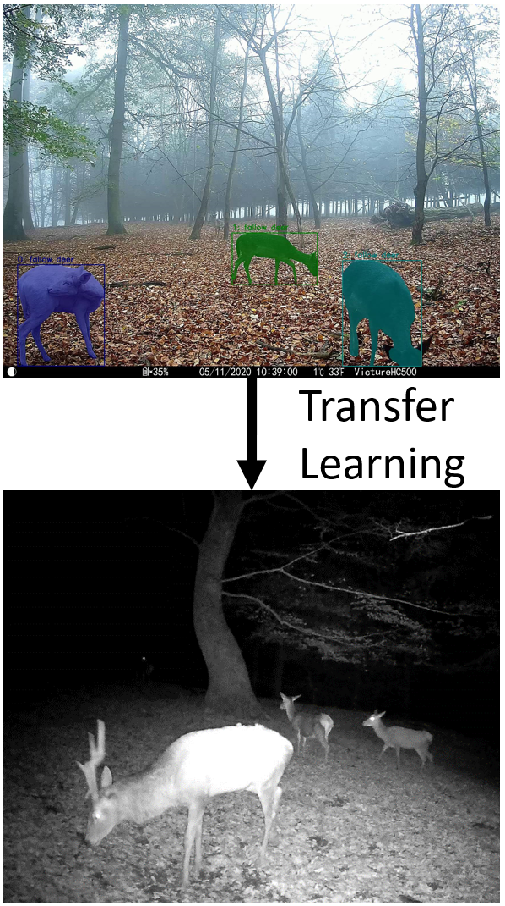
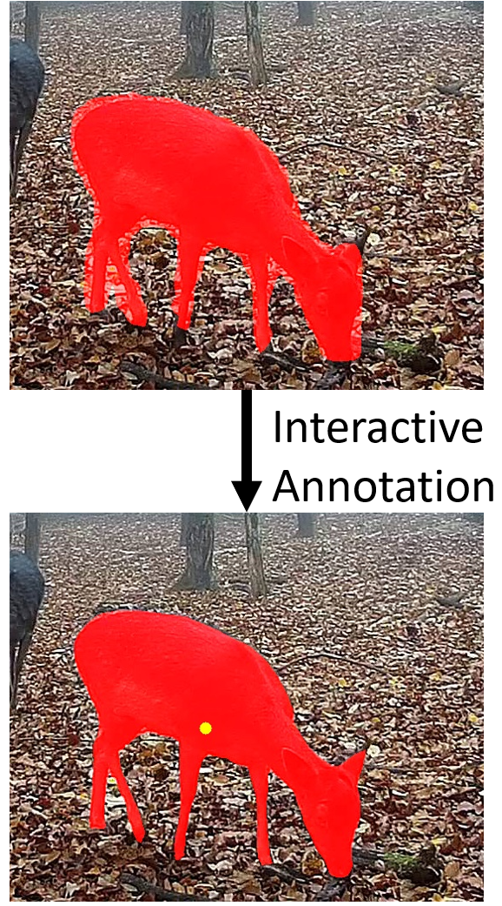

BA-INF 051 - Projektgruppe Intelligente Sehsysteme
PD Dr. Volker Steinhage
Dienstags, 14-16 Uhr, Seminarraum 1.012
-
Vorbesprechung: Freitag, 17. März. 2023, 15.00 Uhr via https://bbb.informatik.uni-bonn.de/b/vol-ung-npn
Themen:
|  |
Transfer Learning für Instance Segmentation auf Tag- und Nachtvideos (2 Themen / 2 Projektgruppenteilnehmende)
Um Tierpopulationen im Wildlife Monitoring zu überwachen, werden Kamerafallen eingesetzt, die sowohl Videos bei Tag als auch bei Nacht erstellen. Da für Nachtaufnahmen normalerweise nur Infrarot- bzw. Grauwertaufnahmen zur Verfügung stehen, ist die Detektion von Tieren in diesen Fällen oftmals schwieriger als bei Tag.
|
|  |
Optimierung eines interaktiven Annotationstools für die Nutzung für Videodaten
Datenannotation ist für das Training von Neuronalen Netzwerken unerlässlich. Insbesondere wenn neue Fragestellungen in Forschungsgebieten untersucht werden sollen, existieren meist keine bereits für diese Zielsetzung vorgesehenen Datensätze. Eine vollständige Automatisierung des Annotationsprozesses ist häufig nicht möglich.
Um eine exakte Groundtruth zu erstellen sind daher häufig semi-automatische Ansätze die beste Wahl, bei denen man mit einer KI-Unterstützung interaktiv die Annotationen erstellen kann.sen in hinsicht auf Präzision sowie untersuchung verschiedener Optical Flow Architekturen.
|

|
Vergleichende Auswertung von Thermaler Zeit und Kalenderzeit für die Ernteertragsprognose basierend auf Satellitenbildern Satellitenbilder eignen sich hervorragend zur Prädiktion von Ernteerträgen von verschiedenen Nutzpflanzen weltweit 1. Die Bilder sind kostenlos und weltweit erhältlich und können somit einen Beitrag leisten, Machine Learning Barrierefrei zu gestalten. Unklar ist, wie die Zeitreihe von Daten am besten verarbeitet wird. Der Zeitraum und die Granularität in der Spektrale Reflektionen und Temperaturen über den Feldern erfasst werden müssen, werden meistens als Hyperparameter von Menschen festgelegt. Eine automatisierte Lösung kann durch Thermale Zeiterfassung erfolgen 2. Grundlage ist, dass sich verschiedene Nutzpflanzen nur an Tagen mit einer gewissen Mindesttemperatur konstant weiterentwickeln. Im Zuge dieser Projektarbeit sollen beide Ansätze miteinander vergleichend ausgewertet werden. Es kann auf bestehendem Python Code zur Verarbeitung der Satellitenbilder und zum trainieren von Ernteertragsprognosen via Extreme Gradient Boosting (XGBoost) 3 aufgebaut werden. Generelle Python Kenntnisse sind also von Vorteil. |
Termine:
- Prioliste per Email mit Betreff "Prios PG" bis So, 19.03.2023, 22 Uhr
- Zuordnungsmitteilung bis Mo, 20.03.2023, 20 Uhr
- 2-seitig. Expose (Ziel,Daten und Methoden,Zeitplanung) bis Fr, 31.03.2023, 14 Uhr
- Start der wöchentl. PG-Jour Fixe: Di, 04.04.2023, 14.00 s.t. mit Präsentationen der ersten (Zwischen-)Ergebnisse
| Home | News | Teaching | Projects | Publications | Team |